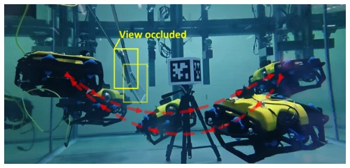
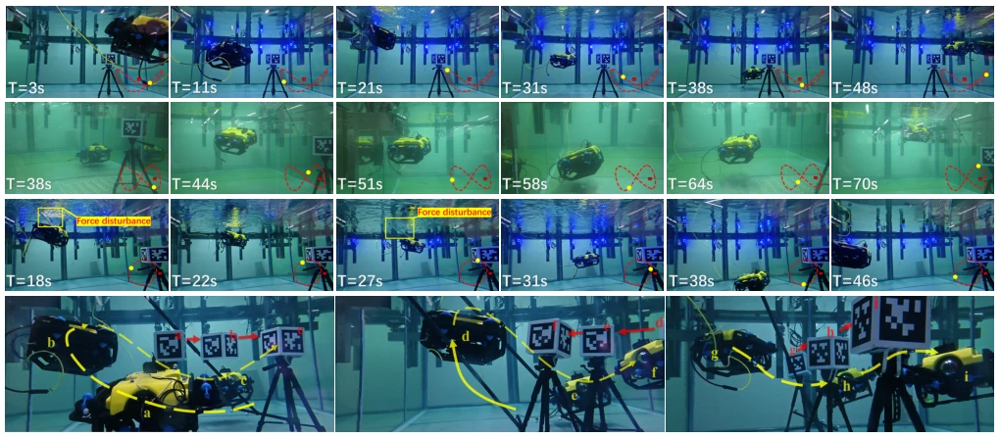
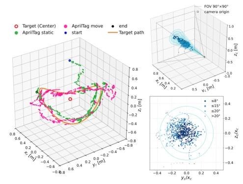

水下目标绕飞（Orbiting）是巡检核心能力，但水下环境太坑。传统视觉伺服（PBVS/IBVS）依赖几何模型，浑浊或目标出视野就瞎 [4]-[6]。虚拟弹性绳能处理部分遮挡，但扩展到 3D 绕飞难 [11]。现有 RL 方法动态控制不错，但对间歇性视觉可见性鲁棒性不足 [14], [15]。一旦目标丢失，控制器要么僵住要么乱飞。本文动机是：能否让策略利用间歇性视觉测量和自身状态，在目标丢失时维持绕飞并恢复跟踪？这需要解决部分可观测问题，且不能依赖外部计算，必须完全 onboard。
—

Fig. 1: 3-D orbiting around the target AprilTag with continuous visual fixation on its center. A manual occlusion of up to ∼8 s is introduced from the left.
Fig. 2: Framework of the AquaOrbit algorithm. Left: the sim-to-real pipeline from parallel training to real-world deployment. Middle: Gazebo simulation and real-world deployment rely on an upper-level target-position estimation module, whereas Isaac Sim training computes the camera-frame target position directly from ground-truth world-frame poses; the dashed box denotes the effective FOV. Right: curriculum learning progressively introduces static, dynamic, and occluded AprilTag targets to enhance robust target tracking.
Fig. 6: Robot three-axis attitude angles and angular velocities over time. Top: the AprilTag is stationary throughout, with only manual occlusions. Bottom: the AprilTag moves during the pink-shaded intervals. twall = 0 denotes the instant of initial target acquisition.
其他图片Other Figures

Fig. 4: Rows, top to bottom: 3D orbit; 30◦-pitch Figure-8 (water quality was relatively poor here); vertical-plane Ellipse under applied force disturbances; and manually controlled irregular AprilTag motion (multi-directional linear/curved motions and box-shaped attitude oscillations).

Fig. 7: Left: 3D orbit of the ROV in the target frame; the ROV position is reconstructed by fusing IMU measurements with visual target displacement. Green/pink points denote samples with the AprilTag stationary/moving. Top-right: 3D vector from the camera to the AprilTag, with the dashed box indicating the camera field of view (FOV). Bottom-right: perspective projection of the target center on the image plane.